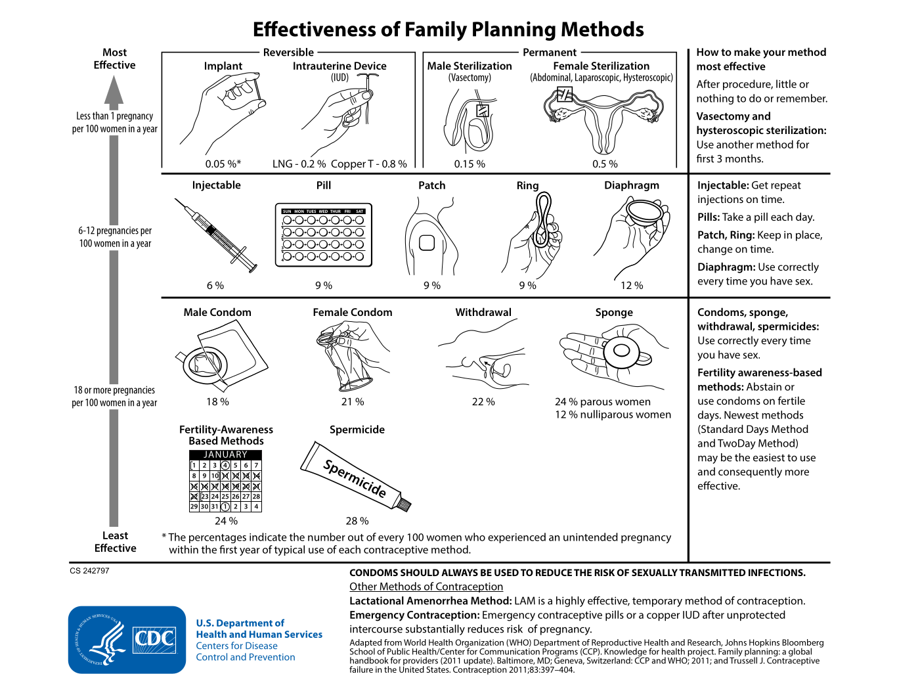
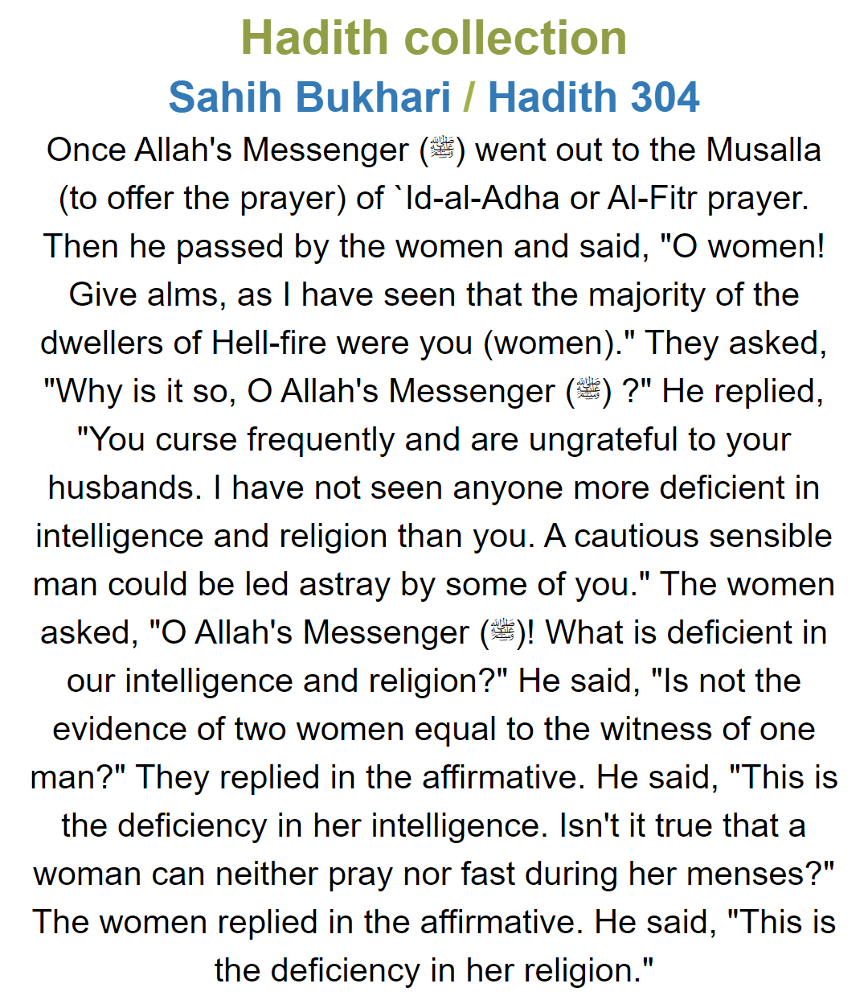

According to Global Wealth Report all the world's wealth in 2019 added up to a grand total of 399.179 trillion in U.S. dollars. In 2019 there were 7.674 billion humans. If we evenly distribute all of the world's wealth, then each human would have a net worth of $52,017. If your net worth is worth more than $52,017 then you are contributing to wealth inequality. If your net worth is $52,017 then you are oppressing noone. If your net worth is $52,017 times 3, then you are oppressing 2 humans. And so on. For example, the world's wealthiest is Jeff Bezos who has a net worth of $187.5 billion. Jeff Bezos is oppressing 3,604,585 humans. Trevor Noah's net worth is $100 million, so Trevor Noah is oppressing 1,922 humans. 1,922 humans are struggling to pay rent and nearly starving to death because of Trevor Noah's greed. The oppressors are billionaires, millionaires, AND hundred-thousandaires. 12.4% of adults have a net worth greater than $100,000. >$1,000,000 are the one percent.
If you are not doing well on TikTok, that's probably because you are ugly.

Between 1961 and 2018, humanity murdered 1,792,182,535,000 chickens. The average human consumes 9 whole chickens per year.
22.5% of humans live in a country where homosexuality is outright illegal. Afghanistan, Brunei, Iran, Maldives, Mauritania, Saudi Arabia are the countries where homosexuality may result in a death penalty. Also, LGBT death penalty is allowed under specific jurisdictions of Emirates, Iran, Nigeria, Pakistan, Somalia, Yemen 
The USDA estimates it costs $233,610 to raise a middle classed american child from birth to age 17. It does not include the cost of sending that child to college.
The amount of money you will earn in your entire lifetime according to your education certification 
In 1996, China passed a law that today prevents average chinese civilians from owning guns. The only type of guns chinese civilians are allowed to own are hunting rifles, a hunting permit is required. China's gun laws are viewed as a success. USA has a firearms homicide rate of 4.63 per 100,000 inhabitants. China has a firearms homicide rate of 0.04 per 100,000 inhabitants. American civilians own 120.5 guns per 100 civilians. Chinese civilians own 3.6 guns per 100 civilians.
It is interesting how China is against it's own citizens owning guns, and yet China gave guns to Islamic terrorists. 43.5% of Islamic terrorists got their military weapons from China. Every mass produced military weapon comes with a factory engraving which tells us where that weapon was manufactured . In 2004, the USA realized China sold missiles to Islamic terrorists, and the USA reacted by passing a law that today prevents americans from purchasing made-in-china weapons (norinco). Why would China sell weapons to terrorists? Historians call it Proxy Warfare. Historians call it Proxy Warfare. China and the USA have always been at war, with poor countries being used as pawns/proxies. If a poor country is turning into a communist governemt, the USA provides military and financial aid to force the poor country into a capitalist government. One example of Proxy Warfare is the Nicaraguan Revoluton. Nicaragua was turning into a communist government, so the USA provided financial and military aid to the capitalist Contras, and China provided financial and military aid to the communist Sandinista. Another example of Proxy Warfare is the Vietnam War, China gave weapons to the communist North Vietnam.
Historians call it Proxy Warfare. China and the USA have always been at war, with poor countries being used as pawns/proxies. If a poor country is turning into a communist governemt, the USA provides military and financial aid to force the poor country into a capitalist government. One example of Proxy Warfare is the Nicaraguan Revoluton. Nicaragua was turning into a communist government, so the USA provided financial and military aid to the capitalist Contras, and China provided financial and military aid to the communist Sandinista. Another example of Proxy Warfare is the Vietnam War, China gave weapons to the communist North Vietnam.
Women in Saudia Arabia barely received the right to legally drive cars on June 2018. In religous text "Sahih Bukhari, Hadith 304" a prophet named Muhammad said two female brains equals one male brain, therefore women are intellectually inferior. Here is a video of Saad Al-Hajari explaining why female drivers ought to be criminalized. Video source: Asem Saleh
Abdul Majeed al-Zindani is the founder of Iman University, he is one of the most intelligent scientists. Abdul Majeed al-Zindani found the cure to AIDS, and in this below video he also found proof that men are inherently smarter than women. Video Source: Memri.org
This is islamophobia. Video source: @thisisaims
This is one of Al-Qaeda's training camps for children. Video source: DailyMail @TheIntlHerald
This woman named Rokhshana was stoned to death. The crime she committed is called (zina) adultery. A wealthy man can say "You are my wife now. Our wedding is in two weeks. I am sending $100,000 to your father." If the bride replies "No," they kidnap her. If the bride runs away, it is assumed she ran away to have sex with a different man, which means she commits adultery. According to "Sahih Muslim, Book 17, Hadith 4194" the proper punishment for zina is death by stoning. Video Source: DailyMail
Bride Kidnapping is when a man shows up at a woman's house, climbs in her window, kidnaps her, holds her hostage, and rapes her. Because the woman got raped, that means she technically had sex before marriage. Having sex before marriage means she is a slut bringing dishonor to her family's reputation. Her entire family and village excommunicates her. Employers refuse to hire sluts, so she becomes homeless, and could be stoned to death called Honor Killing. To preserve her family's reputation, she is expected to marry her rapist. If she marries her rapist that means she is no longer a slut. According to almost every religion, women being sluts is one of the worst crimes. Because a long time ago, a slut named Eve sexually seduced a perfect human named Adam, and because of Eve everyone on Earth is suffering. Every time a woman is a slut, she is practicing satanism. Bride Kidnapping was so common and normal that it is now a tradition called Ala Kachuu in Kyrgyzstan where consenual Bride Kidnappings are staged in front of a whole village. Women see it as romantic, men see it as a right of passage.
It is recommended everyone ought to receive more than one hundred vaccine doses during a lifetime. Within 24 hours of birth, you receive a Hepatitis B vaccine. At the age of 13 months, you accumulated 24 vaccine doses. Click image for higher resolution. Image source: CDC
These are the failure rates of contraceptives. 1/666 vasectomies fail. 1/200 female sterilizations fail. 1/11 birth control pill regimens fail. 2/11 condom regimens fail. Failure equals an unwanted pregnancy.

This is ISIS crucifying a traitor. The audience's index finger gesture is called Tawhid which symbolizes "Allah is number one." Allah is their monotheistic God. Islamic terrorists believe in a literal interpretation of their bibles. Quran 5:3 states that the proper punishment for traitors is crucifixion.
He is singing about Jannah which is Islam's paradise of the afterlife. "Women of Jannah" are called Houris. According to the religious text "Jami` at-Tirmidhi, Hadith 2562," all good muslim men will go to Jannah where there are 72 beautiful female virgin Houris waiting for him. "Quran 54:74-76" emphasizes that the Houris of Jannah are "undeflowered" and "reclining on green cushions and beautiful decorated carpets." Video & audio source: Expressen , Abu Hajar Al Hadrami - وسيوفنا تلمع.mp3
Abu Hajar Al Hadrami is the creator of this song. According to CBS-News Abu Hajar Al Hadrami was killed during an airstrike perpetrated by the U.S. military. Abu Hajar Al Hadrami's music is banned from Youtube, Vimeo, Bitchute. It seems like it is banned on every website except InternetArchive.org. They might delete my website because I shared this song.
Most muslim women do not feel oppressed. Most muslim women believe Allah is our ultimate creator. Allah knows what's best for women. If the Quran says women need less rights, muslim women won't ask questions, they simply follow Allah's rules, and call it "faith." Non-muslims go to Araf which is neither hell nor heaven. Araf is a place of nothingness. Once you convert to Islam, you are officially subjected to heaven and hell. Sidra believes homosexuality is the path to hell. "I didn't make the rules guys." Allah made the rules. Sidra says gay muslims should make an honest effort to stop thinking homosexual thoughts , stop practicing homosexual behaviors, and stop demonstrating gay pride . Straight muslims make sacrifices for Allah, and Sidra expects gay muslims to make sacrifices too. One sacrifice Sidra made is she does not listen to music. Sidra says it is wrong to remind a homosexual that he is treading on the path to hell , because then that would make homosexuals leave the muslim religion. Instead, you have to teach homosexuals how to repent. According to Quran 16:106, leaving the muslim religion is called apostasy, and apostasy is the surest way to hell. So it better to be a sinner than an apostate. Allah has no mercy for apostates. But if you're a sinner, there is a chance Allah will have mercy. Apostasy gives you the death penalty in Afghanistan, Iran, and Saudi Arabia . Also, Sidra believes muslims are more oppressed than homosexuals .
Some muslim women do feel oppressed. Video source: Love Unveils
The muslim scientist Zakir Naik believes homosexuality is the result of debaucherous hypersexuals having sex-before-marriage, and watching too much porn, their libido becomes desensitized, therefore infidels turn to homosexuality to quench their sex addiction. Zakir Naik says the rule for beating your wife is the same rule for beating your children. You are allowed to beat both your wife and your children as long as you don't leave a mark. Video source: Dr Zakir Naik
@SAMRIReports
My Stealthy Freedom is a famous facebook page which collects videos of women protesting the compulsary hijab.
These two are arguing because in "Riyad as-Salihin, Hadith 1689" it says dogs are bad omens. You can own a dog only for hunting and protection of your house, but only for those two reasons and nothing else. Owning a dog for companionship is forbidden. NBC-News reported in 2017 the terrorist group Hamas declared it is illegal to walk your dogs.
According to the Quran, sex-before-marriage, oral sex, anal sex, masturbation, and pornography are forbidden. According to Quran 3:4, muslim men are allowed to practice polygamy with a maximum of 4 wives at once. Muslim women are only allowed to practice monogamy. If a muslim man cannot find a suitable wife, the Quran permits men to have an unlimited number of "right hand possessions (Ma Malakat Aymanukum)." Considering it's historical context, the consensus among muslims scholars is that the "right hand possession" is a euphemism for a female sex slave. Therefore, the Quran permits sexual slavery. Quran 33:50 says female prisoners of war may be used as sex slaves. Therefore, ISIS cannot use their own muslim women as sex slaves, only prisoners of war may be used as sex slaves. In 2014, ISIS declared a "holy war" against Yazidi people. The United Nations estimates ISIS killed 5,000 thousand Yazidi men, and forced 7,000 Yazidi women into sexual slavery.
This is where the Prophet Muhammad claimed that because women have menses, women are automatically inferior


Quran 24:31 says all women must dress modestly by wearing a hijab. In 2005, Iran created a specialized police department called "moral police," whose only purpose is to arrest women who refuse to wear the hijab. The most famous example is a woman named Saba Kord Afshari who was arrested in February 2018 and is currently still serving a 9 year prison sentence because she twice refused to wear a hijab. Saba Kord Afshari is guilty of a crime called "inciting prostitution." In other words, "asking for it." Basically, the female body distracts men's religious servitude. Similarly, in the United States some schools banned leggings and short skirts because those garments distract men's education.

{kind=link}